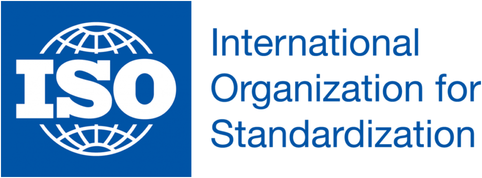
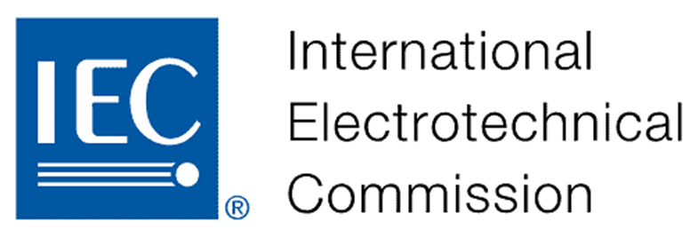

International standards and regulations ensure that industrial automation systems are safe, reliable, interoperable, and globally compatible. They provide common guidelines for design, installation, operation, and maintenance of automated systems across industries and countries.
- Purpose of International Standards
- Ensure safety of personnel and equipment
- Improve quality and reliability of products
- Enable interoperability between devices from different manufacturers
- Support global trade and compliance
- Reduce accidents, downtime, and operational risks
- Major International Standardization Organizations
- a) ISO (International Organization for Standardization)
- Develops international standards for quality, safety, and efficiency
- Widely used across manufacturing and process industries
- ISO 9001 – Quality Management Systems
- ISO 14001 – Environmental Management
- ISO 45001 – Occupational Health & Safety
- ISO 10218 – Safety requirements for industrial robots

- b) IEC (International Electrotechnical Commission)
- Focuses on electrical, electronic, and automation standards
- IEC 61131 – PLC programming standards
- IEC 61508 – Functional safety of electrical/electronic systems
- IEC 62061 – Safety of machinery control systems
- IEC 61850 – Automation in power systems

- c) IEEE (Institute of Electrical and Electronics Engineers)
- Develops standards for communication and networking
- IEEE 802 – Ethernet and industrial networking
- IEEE 1588 – Precision Time Protocol (PTP)
- d) ANSI (American National Standards Institute)
- Coordinates U.S. standards with international standards
- Works closely with ISO and IEC
- a) ISO (International Organization for Standardization)
- Safety Standards in Automation
Safety is a critical aspect of industrial automation.
- IEC 61508 – Functional safety lifecycle
- ISO 13849 – Safety-related parts of control systems
- IEC 60204 – Electrical safety of machinery
Applications:
- Emergency stops, safety PLCs, interlocks, light curtains
- Communication & Networking Standards
Enable seamless data exchange between automation devices.
- PROFIBUS / PROFINET
- Modbus (RTU/TCP)
- EtherNet/IP
- CAN, CANopen
These standards ensure vendor-independent communication.
- Regulations and Compliance
Regulations are legally enforceable rules adopted by governments.
Examples:
- CE Marking (Europe) – Product safety compliance
- OSHA (USA) – Workplace safety regulations
- ATEX – Equipment used in explosive environments
- IECEx – Certification for hazardous areas
- Cybersecurity Standards
With Industry 4.0, cybersecurity is essential.
- IEC 62443 – Industrial automation & control system security
- ISO/IEC 27001 – Information security management
- Importance in Industrial Automation
- Ensures safe machine operation
- Reduces accidents and failures
- Facilitates global acceptance of automation products
- Builds trust between manufacturers, users, and regulators